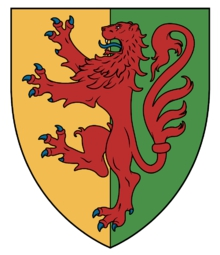

Blev 59 år.
1105-11-26 England. [1]
1165-09-29 Rockley, Marlborough, England. [1]
John Marshal (Marshal of England)
John FitzGilbert, marskalken av hästarna (c. 1105 – 1165) var en mindre adelsman av förmodat anglo-normaniskt ursprung, under kung Stephens regeringstid , och stred i inbördeskriget på 1100-talet på kejsarinnan Matildas sida .
Innehåll
Livet
Från och med 1130 [1] och förmodligen tidigare hade han varit Royal Marshal till Henrik I . När Henry dog, svor John FitzGilbert för Stephen och beviljades slotten Marlborough och Ludgershall, Wiltshire under denna tid. Tillsammans med Hamstead Marshal gav detta honom kontroll över dalen vid floden Kennet i Wiltshire . Han ägde också mark i Somerset, Berkshire, och ägde några byggnader i Winchester. [2] När kejsarinnan Matilda och hennes anhängare landade i Sussex 1139 för att hävda hennes anspråk på tronen, verkar John bara ha varit en nominell anhängare av Stephen. [3]Hans lojalitet till kungen verkar ha varit i tillräckligt tvivel om att hans slott i Marlborough kortvarigt belägrades. När Stephen tillfångatogs i slaget vid Lincoln 1141 bytte John trohet till Matilda. I september 1141 flydde Matilda belägringen av Winchester och tog sin tillflykt till marskalkens slott i Ludgershall. Medan hon täckte sin reträtt från Winchester, tvingades John Marshal ta sin tillflykt till Wherwell Abbey . Angriparna satte eld på byggnaden, och John tappade ögat av blydroppande från det smältande taket. [4]
År 1152 hade John en hyllad konfrontation med kung Stephen, som hade belägrat honom vid Newbury Castle . Efter att John hade brutit en överenskommelse om att kapitulera, hotade Stephen att döda sin son, som John hade gett som gisslan. John vägrade och sa att han kunde få fler söner, men Stephen förbarmade sig tydligen över den unge pojken och dödade honom inte. Pojken växte upp till att bli William Marshal, 1:e earl av Pembroke , en legendarisk figur inom medeltida tradition och en av de mäktigaste männen i England.
Senare i sitt liv blev John kort intrasslad i Becket-kontroversen . Efter att utan framgång ha försökt göra anspråk på ärkebiskopens mark i Pagham 1164, vädjade John sedan till kungen. Även om Johns påståenden i bästa fall var tvivelaktiga [5] använde kung Henry affären till sin fördel mot Becket , som hade vägrat att infinna sig personligen vid överklagandet. Det resulterande rådet i Northampton i oktober 1164 ledde till att ytterligare anklagelser riktades mot Becket, såsom förskingring under hans tid som kansler, [6] och han skulle snart fly till kontinenten.
Embetet som Lord Marshal , som ursprungligen hänförde sig till hållandet av kungens hästar, och senare chefen för hans hushållstrupper, vann som en ärftlig titel av John, övergick till hans äldste son och gjorde anspråk på senare av William.
Familj
John var son till Gilbert, kunglig serjeant och marskalk åt Henry I, och hans hustru Margaret. Efter att hans far dog 1129 ärvde John titeln kungens marskalk. John gifte sig med Aline Pipard, vars far Walter Pipard hade varit en vän till Johns far. John förkastade Aline, omkring 1141; hon gifte sig därefter med Stephen de Gay. John gifte sig med (2:a) Sibyl av Salisbury , syster till Patrick av Salisbury , som hade varit en lokal rival till honom, och en anhängare till kung Stephen, fram till den punkten. John hade två söner av Aline Pipard – Gilbert (död 1166) och Walter (död före 1165). Walter avled sin far och Gilbert dog kort efter att ha ärvt sin fars land.
Johns äldste son av Sibyl av Salisbury, även kallad John Marshal (1145–1194), ärvde titeln marskalk, som han innehade fram till sin död. Titeln gavs sedan av kung Richard Lejonhjärta till sin andra son av Sibyl, William (1147–1219), som gjorde namnet och titeln berömd. Även om han hade börjat som en yngre son utan arv, när han ärvde titeln var hans rykte som soldat och statsman oöverträffat i Västeuropa. John Marshal hade fyra söner med sin andra fru. Förutom John och William fanns Henry (1150–1206), som fortsatte att bli biskop av Exeter , och Anselm, som tjänade som riddare i sin frändes hushåll,Rotrou IV , greve av Perche . Det fanns också döttrar: Maud (hustru till William le Gras), Margaret och Sybilla. Mauds dotter, Margaret, gifte sig med Ralph de Somery , son till John de Somery och Hawise de Paynell.
Referenser
Förfäders rötter av vissa amerikanska kolonister som kom till Amerika före 1700 av Frederick Lewis Weis, raderna 55–28, 66–27, 81–28, 122A-29
Barlow, Frank . Det feodala kungariket England 1042-1216 London: Longman Group Limited, 1961. ISBN 0-582-48237-2
William Marshal, Knighthood, War and Chivalry 1147-1219 Longman 2002 ISBN 0-582-77222-2
Specifika
Hollister, CW, Henry I, 2001, s.362
Crouch, D., William Marshal tredje upplagan, Abingdon, 2016, s14
"The Oxford Dictionary of National Biography" . 2004. doi : 10.1093/ref:odnb/18122 .
Bryant, N (red.), The History of William Marshal, Woodbridge, 2016, s30
Warren, WL, Henry II, s.485
Warren, WL, Henry II, s486